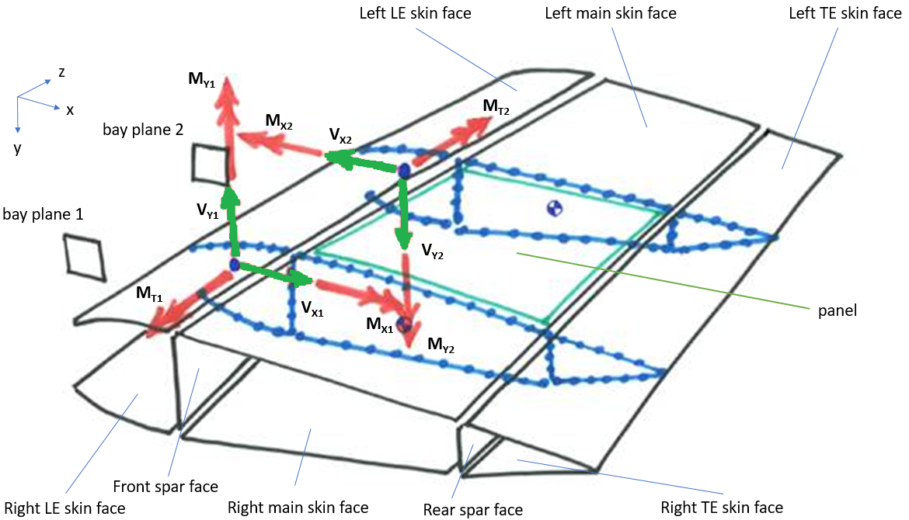
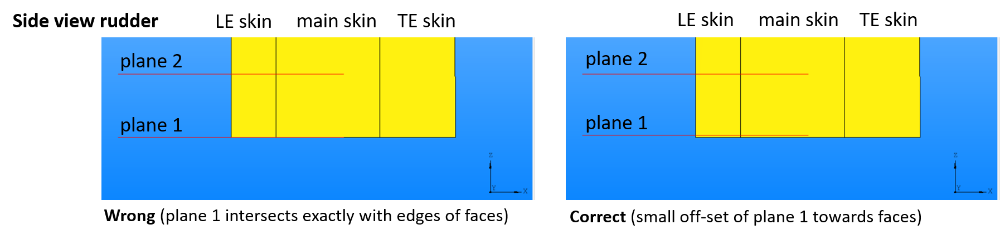

Welcome to BayAnalysis documentation!¶
The structural analysis is done by using the BayAnalysis tool provided by Fokker. This tool determines the reserve factors w.r.t. buckling for all skin and spar panels in a bay. A bay is the section of the rudder between two consecutive ribs. A panel is the part of the skin faces and spar faces which lies within a bay. The tool executes the following steps:

- Cut the provided skin and spar faces at each of the bay planes, creating a cross-section of the rudder at both ends of the bay (illustrated in blue below).
- Perform a 2-D section analysis for both resulting cross-sections. The provided forces and moments determine the acting normal and shear stresses.
- Perform a buckling analysis for compression and shear loads on each of the panels in the bay, using the earlier determined normal and shear stresses.
- Return the reserve factors for each of the panels.
{kind=link}
How to install and run BayAnalysis¶
- Copy the bay_analysis package into the root of your project directory. Placing the package in a subdirectory will lead to import errors.
- Run example_bay_analysis.py in bay_analysis/examples to see if BayAnalysis works. Check out the different inputs (and their order) in the GUI.
- To use the tool in your code, import the BayAnalysis class in your module:
from bay_analysis import BayAnalysis
BayAnalysis inputs¶
In order to perform an analysis, the BayAnalysis class requires the inputs listed in the table below. API information regarding these input can be found here:
General information regarding these inputs can be found after the table.
| Input | Type |
|---|---|
| rhs_skin_faces | [Face, Face, Face] |
| lhs_skin_faces | [Face, Face, Face] |
| spar_faces | [Face, Face] |
| bay_planes | [Plane, Plane] |
| Vx | [float, float] |
| Vy | [float, float] |
| Mx | [float, float] |
| My | [float, float] |
| Mt | [float, float] |
| ref_x | [float, float] |
| ref_y | [float, float] |
| rhs_skin_materials_t | [float, float, float] |
| lhs_skin_materials_t | [float, float, float] |
| spar_materials_t | [float, float] |
| rhs_skin_materials_E | [float, float, float] |
| lhs_skin_materials_E | [float, float, float] |
| spar_materials_E | [float, float] |
| rhs_skin_materials_G | [float, float, float] |
| lhs_skin_materials_G | [float, float, float] |
| spar_materials_G | [float, float] |
| rhs_skin_materials_D | [[D11,D22,D33,D12],[D11,D22,D33,D12],[D11,D22,D33,D12]] where D is float |
| lhs_skin_materials_D | [[D11,D22,D33,D12],[D11,D22,D33,D12],[D11,D22,D33,D12]] where D is float |
| spar_materials_D | [[D11,D22,D33,D12],[D11,D22,D33,D12]] where D is float |
| N | integer |
rhs_skin_faces, lhs_skin_faces, spar_faces, bay_planes The inputs related to skin and spar faces are split up into rhs_skin_faces, lhs_skin_faces, and spar_faces. The expected order of these inputs is from front to rear. The bay_planes define the start and end of a bay in spanwise direction. Compare order of slot names in code example with image below:
BayAnalysis(rhs_skin_faces=[rhs_f1, rhs_f2, rhs_f3],
lhs_skin_faces=[lhs_f1, lhs_f2, lhs_f3],
spar_faces=[spar_f1, spar_f2],
bay_planes=[plane1, plane2],
# Other slots
)
{kind=link}
Make sure that both bay planes intersect with the rudder geometry. Do not position planes exactly on the root or tip edges of the rudder faces as geometry kernels have difficulties with intersecting exactly on the boundary of a face.
{kind=link}
Vx, My, Vy, Mx, Mt The forces and moments acting on the hinge line at both bay planes. These need to be ordered consistently w.r.t. bay_planes. Hence, when the starting bay plane is the first entry in the bay_planes list, the forces and moments acting at the respective cross-section are also the first entry in their respective input lists. Compare order of slot names in code example with image below. See the reference material for information on determining the slopes and jumps.
BayAnalysis(# Other slots
Vx=[vx1, vx2],
My=[my1, my2],
Vy=[vy1, vy2],
Mx=[mx1, mx2],
Mt=[mt1, mt2],
# Other slots
)
{kind=link}
ref_x, ref_y The x- and y-coordinates of the locations where the torsion and shear forces are defined. Compare order of slot names in code example with image below:
BayAnalysis(# Other slots
ref_x=[x1, x2],
ref_y=[y1, y2],
# Other slots
)
{kind=link}
material properties The material properties E (Young modulus), G (shear modulus), t (laminate thickness) and D (bending stiffness matrix) associated with the rhs_skin_faces, lhs_skin_faces and spar_faces inside the bay. Material properties can be obtained from the csv files provided with the reference material. Again, these need to be ordered consistently w.r.t. the faces. Hence:
BayAnalysis(# Other slots
spar_faces=[spar_f1, spar_f2],
spar_materials_E=[spar1_E, spar2_E],
# Other slots
)